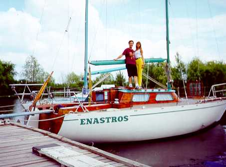
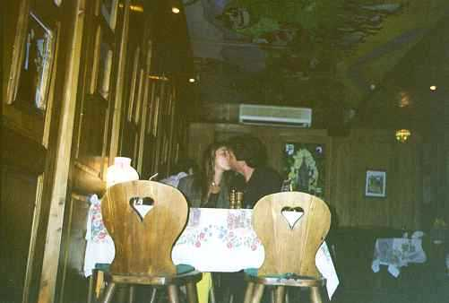
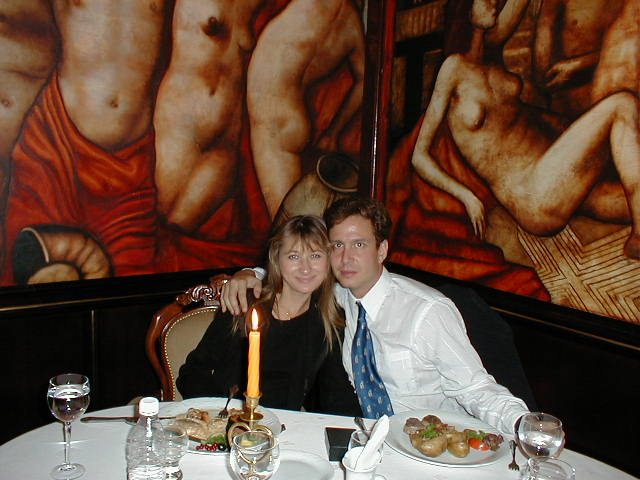
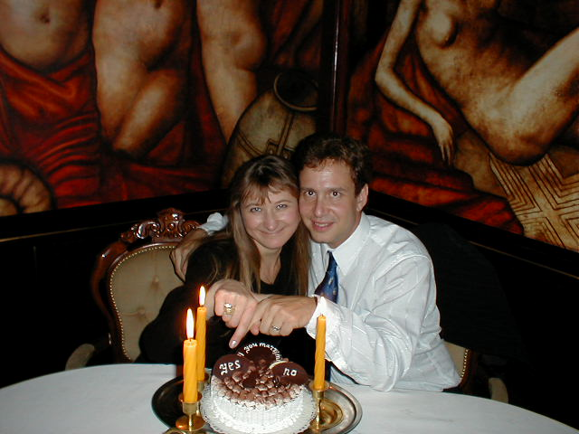
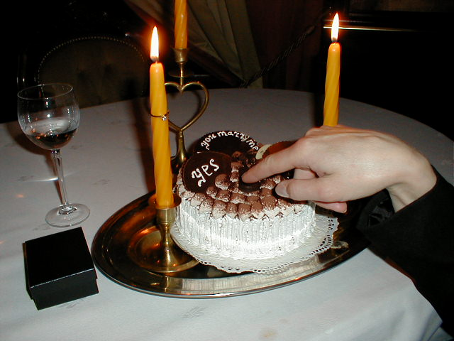
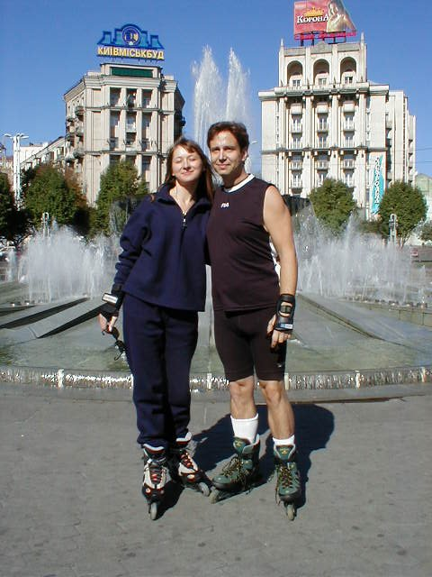

Dear Olga,
Never in a thousand years would I have thought that I would meet a woman like you! You are so poised with grace and beauty. You are kind and loving and appreciative. You are intelligent and feminine and interesting. You are a true lady who has a firm grip on my heart.
I remember back before I came to Kiev for the first time. It was very exciting for me and my hopes were high that I might meet the girl of my dreams in the city of my mother's birth. But this is typical for me. Deep down I am an optimist and I easily believe the best will happen. But in my life it is not always the case the best does happen. So I usually look at what may mess that up. I also often attempt to play down what might be so that I don't get disappointed. Before I came out to Kiev I remember thinking to myself and planning: What will I do if this doesn't work for me? For years now I have not be able to find anybody special where I live. Will I remain alone until I die?
The time I spent in Kiev was truly wonderful. I was like a kid in a candy store - there were many beautiful women there and the all were kind and they all accepted my invitation to go out. You must understand this just does not happen where I live. If anything it is the exact opposite here. But quickly I learned that I was still not making any real connection to any of the women. It is hard to really get to know somebody in just a few days. And, along with being feminine, the women are a lot more reserved about themselves and do not open up to somebody else that quickly. But I was having a great time so I did not think of my trip as a total loss. If I came home with no perspective wives at least I had a good time.
And I remember when I met you at the second social. I remember seeing you as I was visiting all the tables. I remember coming back to your table and sitting down next to you. At the time I didn't realize that that was your table. I remember looking to my left and seeing you there and I got nervous. But we talked for a while and you were very pleasant to me, which eased my nervousness. I remember you showing me your photos and when you showed me the photo of you at your work I didn't know what to do. It was a very provocative picture and I didn't want you to think that I was just interested in you for your body. I guess I was embarrassed.
I believe I came around to your table later and asked for your number and if you wanted to go out. I needed to work up the courage to ask you. I'm glad you were still there otherwise we wouldn't have went out.
I remember our first date together. I had just had a date with a nice girl and her son that afternoon. Nothing special. I got back to the hotel to change for our date. I had made up my mind that I wanted to take you to the Renaissance, to a fancy place because I considered you a classy lady. When I came down to the lobby you were late in arriving. My first fear hit me. Up until then all the ladies were nice and eager to go out. It was unbelievable to me that I could take out so many beautiful women. Then you were late. I began thinking that perhaps my luck had run out, that you were much too good for me and that you wouldn't show up at all.
While I was waiting there an embarrassing thing happened to me. The lady I had a date with that afternoon arrived at the hotel dressed to go out. Seems she was going out with one of the other Americans but he was also late. So here we are, me and her, stuck in the lobby because our dates were late and we were trying to avoid each other. Finally I went up to her and said that it was alright, that the men are doing this and it makes sense that the women are doing it too. Normally I would have been angry, hurt and crushed if that happened to me but here in Kiev there are many beautiful women. And I have the most beautiful woman coming here to meet me for dinner. Eventually you arrived and we went to dinner.
The restaurant was just fabulous and you looked great. I remember getting wine, which is something I rarely drink. I remember telling you not to worry about whatever the evening ended up costing and that I just wanted to go out to a nice restaurant with a nice lady and have a good time. I made you promise to not worry about it. I had learned that Ukrainian women worry about how much money a guy spends on them and I didn't want that ruining the evening. I remember starring into your eyes as we talked and that the rest of the restaurant seemed to melt away. But I still found it difficult to look you directly in the eye for a long time. To me it was just too intense, too strong a feeling. The atmosphere was very romantic and I was just getting swept up in the moment. The wine was kicking in (well at least the portion that I didn't spill on the tablecloth! Talk about embarrassing!) and my blood was flowing. I was complimenting you often and I did mean every compliment, but I felt like I was worrying you. I remember telling you that you were definitely one of the women that I wanted to see again and to continue to talk to. Turns out you were the only woman that I said that to.
The passion and fire that was in my heart at the restaurant managed to cool itself down a little bit on the taxi ride home. I started thinking that I messed up the evening by being too intense and you appeared to be nervous. When we got back to the hotel and said goodnight I gave you a little kiss and what I remember was that you turned to your cheek slightly. It all seemed rushed as you were talking to the taxicab driver. Before I knew it you were off in the taxi. I went back in the hotel thinking "Well you blew it Andy by going overboard! You'll probably not see her again because she doesn't seem to be interested in you. Oh well, you can't win them all". The rest of that night was not particularly pleasant for me.
That weekend I had two women come into Kiev that I was speaking to before through email. One, Svetlana, was staying in my hotel and the other, Elena, was in another hotel. I had told Svetlana about Elena and said that I would not be able to see Svetlana very much during that weekend. Svetlana was staying until Tuesday and Elena was only there until Sunday. Svetlana said she understood. Turns out that Svetlana was not at all like I expected her to be. She was too young and immature. The whole weekend she was trying to cling to me and I was not interested.
I didn't enjoy the last social on Friday very much. At this social I had my tux and got some roses to pass out. While I had fun trying to be Mr. Charming, I did not get a single phone number at the last social. I didn't see anybody that I liked or was interested in. There was nobody here to compare to you. I was really hoping to see you there but you didn't show up. I guess that was good because Svetlana was hanging around me most of the night anyway.
Elena was also young. I was more interested in Elena than Svetlana. I spent a good portion of that weekend with Elena (remember I was still thinking I'd never see you again). But Elena was elusive and secretive. Then I caught Elena in a lie and I didn't appreciate that at all. In the end I sent Elena off on a train and told her that I would not be contacting her anymore.
At this point it was pretty depressing for me. All the socials were over and I still didn't have anybody I was seriously thinking about. And the person I was really interested in, you, was not interested in me as far as I could tell. Well I still had some more phone numbers and women I could take out but I felt certain that I would be going home without knowing that I had somebody that was a good possibility.
I finally got enough courage to call you again and see if I could make a better impression on you. I remember thinking that I need to make a date with you that was more casual and try to take you on a more sporty date. I thought of horseback riding or bicycling. I tried and tried to find a place for bicycling but I could not find one. And, as we now know, my lead on the horseback riding was not all that good.
That second date started off badly with the weather not being cooperative. But still we managed alright. And that long taxi ride out to what was supposed to be a horseback riding place! My heart sank when I said that we would not be able to ride horses. I kept thinking she must think I'm a dope! I can't even arrange a date! But again we muddled through.
I don't remember when we went up to my hotel room exactly but I remember that I wanted to show you my pictures and let you listen to my CD. I remember you listening to the CD. I made sure that I put on The Reunion because it's a particularly romantic song. You had the headphones on and was swaying to the music slightly. All I could do is watch you. Your face looked so lovely as it had your thoughts of romance on it. I remember leaning down close to your face and I wanted to kiss you right then and there. But then I remembered that I'd said that I wouldn't try anything. And here we are alone in my hotel room, you're sitting on my bed and I'm going to kiss you passionately while you're listening to a romantic song?!? What will you be thinking? You'll think that I'm just breaking my promise. I can't do that to you! I respect you and I want you to like me and be able to trust me when I make a promise to you. Let me tell you it was a hard thing to maintain control at that moment. Then you opened your eyes and we both got startled! It was funny and embarrassing but for some reason, by then I felt a little more comfortable about it.
I remember we also went to see that movie in Russian.
It's a good thing that I had seen it already in English and that it was
an action film instead of a film with a lot of talking. By this time we
were feeling more comfortable with each other and I felt good about that.
Didn't we also go to that dance club later on? I remember that we started
the date at around 1 in the afternoon and you didn't go back until around
11 or 12 at night. I was beginning to feel much better about you and that
perhaps I was making a good impression on you this time.
But, for me, I knew there was something special going
on when we were standing outside of the hotel and kissing. It was like
neither of wanted the night to end. And when you came back into the hotel
because I had forgotten to take care of the taxi all I could think about
was that it was not just me who had lost his mind, thinking not of what
needed to be done but instead thinking of only you. That's when I realized
that you were having the same feelings that I was.

And our final date was really good too. I decided not to try to get the bicycles or to search for horseback riding again. I thought sailing would be better. It was very nice. It was peaceful and quiet and beautiful. I remember feeling, as we gathered our stuff up in the boat and got comfortable, that I will do this again with you many times in America. That walk we had was nice too. At that point we really felt like a couple to me. It was getting comfortable for me now. I was not as concerned with looking like a fool, I was interested in looking at you and learning more about you. And that taxi ride home was wonderful. Gregory was doing a great job playing those romantic songs and this time I was not nervous about being romantic.

Remember that we tried to find Sean and Elena to go out dancing? It's funny when you think about what has happened with them and us now.
When we were in the dance club later that night and playing the slot machines I again remember getting a picture of doing this with you again in America. Maybe Vegas or Reno.
But when the night was ending I was getting sad. Not only were you leaving but I was leaving too for America. What was to happen next? I said that if I met anyone I really felt I had potential with that I would resist getting engaged right then and that I would instead talk with them on the phone and in email and come back to see them. Was that a mistake?
Well I sure felt it was a
mistake when I was on
that long flight back to the US. A couple of the American guys were talking
about the people they met, and John was already engaged and filing papers. Another
member of the group, Greg, was mesmerized by a lady and was going to get
married. I started thinking "What did I do? I should have Olga fill out
paperwork too!". I couldn't stop thinking about you. I saw your perfume
in the magazine but I wasn't able to get it on the plane because I only
had travelers checks. But I knew that I would get you that perfume. I started
thinking about all the romantic things I could do for you.
Roses photo here
When I got home I immediately order you flowers.
And I started calling you. With every call our love has been growing stronger.
I couldn't wait to get back out to see you. I felt so good when I got the
tickets because I knew that I would definitely be seeing you again.
As the days went onward I knew that on my trip back I would ask you to marry me. My first idea of how to ask you was to go back to the Renaissance and have them make you a cake that asked you to marry me. I wanted it to say "Da" and "Nyet" but in the end they just pub "Yes" and "No". I tried for a few weeks to get the number of the Renaissance and finally got it. I called them to arrange the evening but my Russian was not good enough to do that. I emailed a few AFA interpreters asking them to make the arrangements for me but no one returned the email. I was getting desperate when I called AFA and asked them for help. They helped me make arrangements for Wednesday.
The trip out to Kiev in September was long and made even longer by my detainment in the airport. Not only had I gotten only 2 hours sleep on the 20 hour flight to Kiev I was forced to sleep on a cold steel bench in the airport that first night. I was tired cold and frustrated by the security officers and other people in the airport who would not let me into the country to see you. I could not page you and I could not reach you at your home either. The frustration broke me down and I was an emotional wreck.
I had to travel back to Warsaw for my visit and 2 days that I could have spent with you were wasted. I called you from Warsaw and emotional wreck and crying. It was like I was a starving man shown a gourmet dinner but not allowed to eat. Luckily the Ukrainian Embassy processed my visit quickly and I was able to make the next mornings flight back to Kiev. I said to myself that I would not call you until I was past customs this time. When I called you I remember your surprise when I told you I was past customs and you could pick me up. The wait for you to pick me up was almost unbearable but at least I knew that we would be able to spend some time together.
I was getting a little angry with you being late but when you arrived all of that went away. I was so glad to see you finally, so much so I spilled coke all over you and your purse as we hugged for the first time in a long time. I'm glad you were able to get that out.

We settled in to the apartment and all I could think of was that that night was Wednesday, the night we were supposed to go to the restaurant! But I decided that it was just too soon to do that now. We spend our first night together and it was truly wonderful. The next night we were to go to the restaurant. I was hoping I could make adjustments to my plan for that night. They had put us in that nice, romantic corner booth and I thought "maybe the restaurant remembered us and will be all ready for us even though we're a day late". I excused myself saying I was using the bathroom to make sure that things were still on. It's a good thing that I have been taking Russian lessons because they helped me to talk to the security person who got the waitress for me. They told me that I was supposed to come last night and I explained my problems at the airport. It looked like they would not be able to make the cake and I started thinking of other ways I could make this work. Then the waitress had an idea of how they could still make the cake and I returned back to the table. I remember coming into the main room again with a smile on my face. I quickly wiped the smile off my face so you would not suspect anything just as I came past the curtain that draped our booth.
I had also thought that you must be thinking that I would ask you to marry me because we had spoke of our life together in America already on the phone many times and here I was taking you back to a fancy restaurant, the restaurant of our first date. So I had a diversionary plan. I had gotten you that necklace to divert your attention and to satisfy your curiosity should you be thinking that I was about to propose. It seemed to work nicely.

When dinner was done I suggested desert. You said that you weren't hungry and I said that Ukrainians always have desert! At that time the cake arrived. You were in shock and didn't know what was going on. I worried because it was a little hard to read the question that was on the cake. And as is typical your answer did not immediately come.

Of course I had to ask you the question myself. I was relieved to hear you say yes. It took you a while to notice the ring on the candle. And then we danced cheek to cheek and it was wonderful. When we got back to the apartment we also danced to "When You Love Somebody" and there was magic in the air for me.

The rest of our time together was truly wonderful too, with roller blading down Krushatic, the shopping together, strolling around, making dinner, washing dishes and taking showers together. I even got to take care of you when you had a stomach ache. It was only when I was leaving did the anger returned and I said to myself "If I didn't have that Visa problem getting in I would be able to spend another two days with her". We parted at the airport and I remember how you just disappeared after I went through customs. All I could think about was to get busy, to get started with the Fiancé Visa paperwork and to get the house ready. I want to get you here as soon as possible so we can start our life together.
And now I'm coming out again in December. I guess I just can't keep away from you - and I never want to be away from you for such a long time again. My love we will be together in December again and we will have another wonderful time. And soon you will be in my arms in America, in our house, safe, comfortable and happy as we start our family and life here.
I love you very much and miss you dearly,